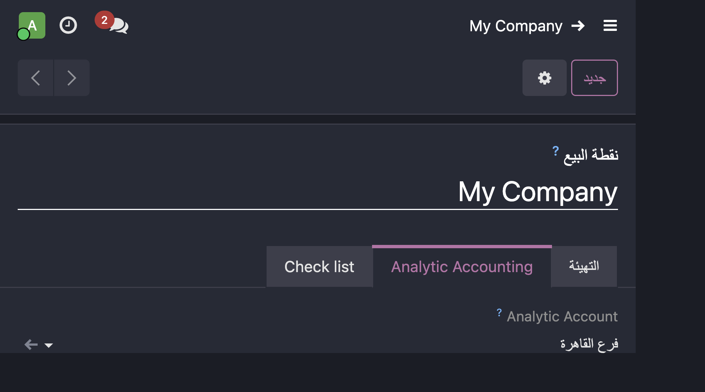
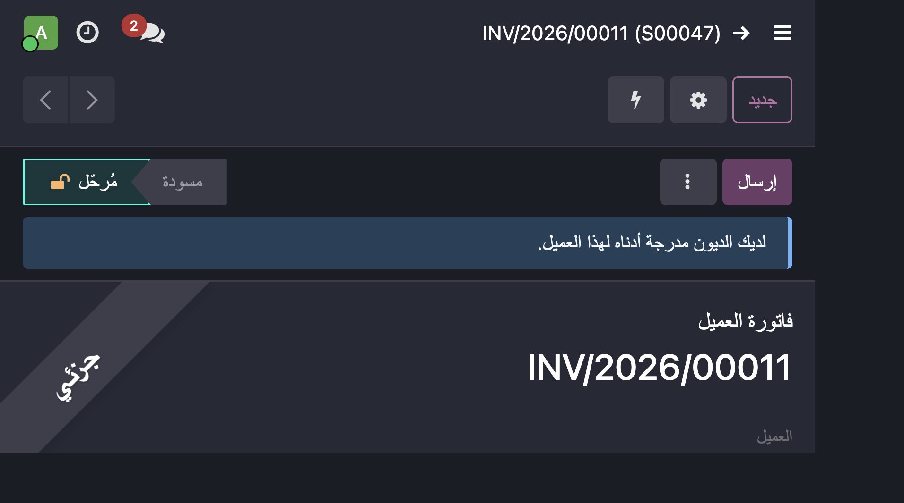
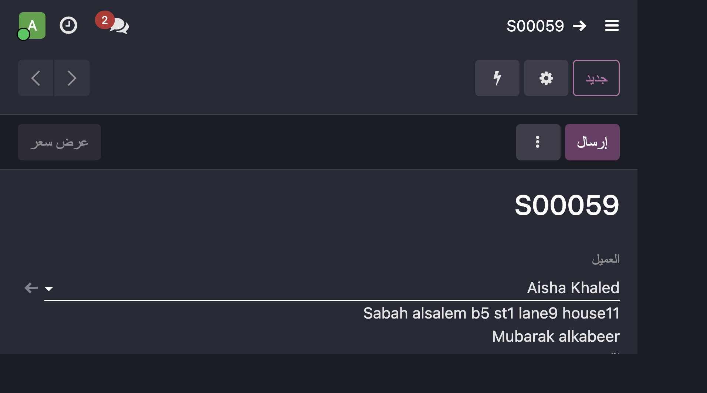
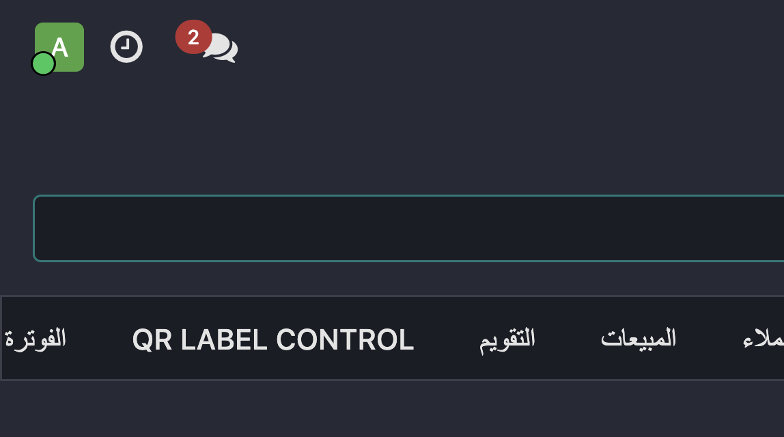

Branch Analytic Accounting
Turn Odoo Analytic Accounting into a branch / profit-center
tracking system. Assign one branch (analytic account) to a Point of Sale
configuration, a sales order or a customer invoice, and the revenue and COGS
are automatically posted onto that same branch.
What it does
- Point of Sale — new Analytic Account field on each POS configuration.
- POS session closing — sales, refunds, COGS and COGS reversals receive the POS analytic account (100%). Receivable / cash / bank / tax / stock-valuation lines are never polluted.
- Customer invoices & credit notes — an Analytic Account header propagated to the product lines; native stock_account copies it onto COGS lines. Credit notes reverse on the same branch.
- POS-generated invoices — inherit the analytic account from the POS config, no manual step.
- Sales orders — an Analytic Account header propagated to the order lines, then natively to the invoice and COGS.
- Optional enforcement — require an analytic account before closing a POS session, posting a customer invoice, or confirming a sales order.
Result
The native analytic P&L (Accounting → Reporting) then shows, per branch:
Revenue
- COGS
-----------
= Gross Profit
Configuration
- Create the branch analytic accounts (Accounting → Configuration → Analytic Accounts), optionally under a dedicated analytic plan.
- Assign an analytic account on each Point of Sale configuration (Point of Sale → Configuration → Point of Sale → Analytic Accounting tab).
- Optionally enable the enforcement toggles in Settings → Accounting → Analytics.
Screenshots
Point of Sale — Analytic Accounting
Pick the branch analytic account on each POS configuration.

Customer invoice — Analytic Account header
Select the branch on the invoice header; product lines and COGS inherit it automatically.

Sales order — Analytic Account header
Select the branch on the sales order; it flows natively to the invoice and COGS.

Settings — Analytics enforcement
Optionally require an analytic account before closing a POS session, posting a customer invoice, or confirming a sales order.

Technical notes
- Odoo 19 Community, built with inheritance only — no core files are modified.
- Uses the native
analytic_distribution and native stock_account COGS flow — no duplicated COGS entries.
- Multi-company safe (
check_company=True).
- Includes automated tests covering POS sale/refund, two branches, customer invoice, credit note, POS-generated invoice and sales orders.
By Flous Flow — flousflow.com